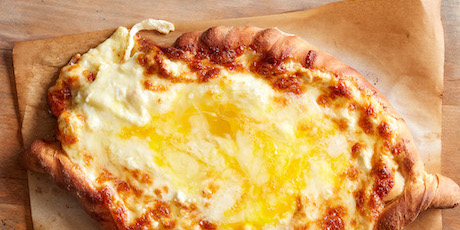

Georgian Cheese and Egg Bread (Adjaruli Khachapuri)

Khachapuri in myriad forms — all of them some combination of dough and melty cheese — is the go-to snack of Georgia. Our adjaruli khachapuri is the fun one: diners tear off pieces of the homemade bread canoe to scoop up gobs of bubbly filling, a mix of creamy mozzarella, sharp feta and just-barely-set egg. It makes a great communal snack, or part of a satisfying lunch or dinner with a green salad. And it's simple to make: the yeast dough rises in less than 1 hour and bakes up crisp and tender on a pizza stone in just 15 minutes.
DIRECTIONS FOR: GEORGIAN CHEESE AND EGG BREAD (ADJARULI KHACHAPURI)
INGREDIENTS
Dough
- 1 Tbsp olive oil, plus more for the bowl
- ¼ cup milk
- pinch sugar
- 1 tsp active dry yeast
- 1 ¾ cups all-purpose flour, plus more for dusting (see Cook's Note)
- 1 ¼ tsp kosher salt
Filling and Topping
- 1 lb(s) part-skim mozzarella, shredded
- 8 oz feta, crumbled
- 3 large eggs, at room temperature
- 2 Tbsp unsalted butter, at cool room temperature
DIRECTIONS
Dough
- 1. Lightly oil a medium bowl. Heat the milk with 1/2 cup water in a small saucepan over low heat to between 110 and 115ºF. Transfer it to a small bowl and stir in the sugar, then sprinkle over the yeast and let stand until foamy, 5 to 10 minutes. (Cover the bowl if the room or the yeast is cold.)
- 2. Put a pizza stone on the lowest rack in your oven, removing the second rack if there is one. Preheat the oven to 500ºF. Cut two 10-by-7-inch pieces of parchment paper.
- 3. Put the flour in a medium bowl and whisk in the salt. Make a well in the centre and pour in the yeasty mixture and the oil. Stir with a wooden spoon until the flour is incorporated and the mixture forms a shaggy ball — it will be soft and sticky. Flour your work surface, scrape the dough onto it and knead until smooth, elastic and still slightly sticky, about 5 minutes. Put the dough in the oiled bowl, turn it to coat with oil and cover the bowl loosely with plastic wrap. Set the bowl in a warm place until doubled in size, 1 hour to 1 hour and 15 minutes.
Filling and Topping
- 1. Work the mozzarella and feta together with a fork in a medium bowl. Make a little well in the centre and add 1 egg. Beat the egg a bit with a fork, and mix and mash well to combine with the cheeses.
- 2. Lightly flour your work surface. Turn the dough onto the floured surface and cut it in half. Round the halves gently back into rough rounds. Put 1 piece of parchment paper on your work surface and flour it lightly. Press and use a rolling pin to roll 1 piece of dough into a round 1/8-inch thick and 10-inches across. Slide it onto the paper — it will hang over the long edges — and then slide it, paper and all, onto the back of a baking sheet. (Alternatively, use a pizza peel.) Repeat with the other piece of dough, transferring it to the back of a second baking sheet.
- 3. Spoon half of the cheese mixture on the first round, spreading some 1/2-inch from the edge and mounding the rest in the middle (there will be a big mound). Roll the sides up tightly to make a shape like a cheese-filled canoe — it should be about 10 inches long and 4 inches wide. Pinch the ends together and twist to seal tightly. Repeat with the other piece of dough and remaining cheese. Let rest 10 minutes.
- 4. Slide the khachapuris on their papers onto the pizza stone, leaving a few inches of space between them. Bake, turning them 180 degrees after about 8 minutes, until golden and crisp, about 12 minutes total. Crack 1 egg in each khachapuri and continue to bake until the white is just set around the edges, but some of the white and the yolk are still a bit raw, about 3 minutes. Remove to a serving platter, dot each khachapuri with 1 tablespoon butter and stir the eggs into the hot cheese — they will continue to cook. Serve immediately, tearing off pieces of bread to scoop up the hot, buttery, eggy, gooey cheese.
TIPS AND SUBSTITUTIONS
Yield: 2 khachapuris; Cook’s Note: When measuring flour, we spoon into a dry measuring cup and level off the excess. (Scooping directly from the bag compacts the flour, resulting in dry baked goods.); Special equipment required: a pizza stone
Return to main page